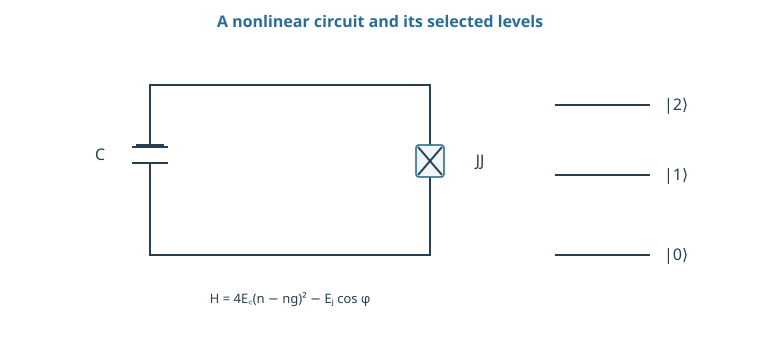
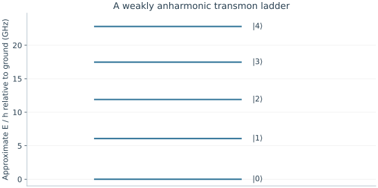

Starting point: Chapters 1–7; physical concepts and approximations are introduced as needed.
Anchor example: A transmon coupled to a readout resonator.
This lesson includes explanations, worked examples, and problems with solutions. Advanced results whose proofs are outside the chapter are identified explicitly.
8.1 Circuit Qubits
A capacitor and an inductor exchange electric and magnetic energy. Why can we not simply call their two lowest energy levels a qubit?
8.1.1 Oscillators and Josephson junctions
Begin with a capacitor of capacitance C and an inductor of inductance L. If Q is capacitor charge and Φ is the time integral of voltage, their stored energy is \(H=Q^2/(2C)+\Phi^2/(2L)\). The corresponding equations \(\dot\Phi=Q/C\), \(\dot Q=-\Phi/L\) give \(\ddot\Phi=-\Phi/(LC)\), an oscillator of angular frequency \(1/\sqrt{LC}\).
Quantization replaces Q and Φ by noncommuting operators and gives equally spaced energies \(E_n=\hbar\omega(n+1/2)\). Equal spacing prevents a resonant drive from singling out just the lowest pair. A Josephson junction replaces the quadratic inductive energy by \(-E_J\cos\varphi\), with \(\varphi=2\pi\Phi/\Phi_0\) and flux quantum \(\Phi_0=h/(2e)\). This nonlinear energy changes successive transition frequencies and makes selective qubit control possible.
8.1.2 The transmon regime
The oscillator quantization used here assumes \([\Phi,Q]=i\hbar\). Let \(\Phi=\Phi_{\rm zpf}(a+a^\dagger)\), \(Q=-iQ_{\rm zpf}(a-a^\dagger)\), and \([a,a^\dagger]=1\). Choosing \(\Phi_{\rm zpf}=\sqrt{\hbar Z_c/2}\), \(Q_{\rm zpf}=\sqrt{\hbar/(2Z_c)}\), with impedance \(Z_c=\sqrt{L/C}\), satisfies the commutator. Substitution into the quadratic circuit energy cancels the terms containing two raising or two lowering operators, leaving \(\hbar\omega(a^\dagger a+1/2)\). Thus the equally spaced ladder follows from the quadratic energy and the canonical quantization rule. The Josephson quartic correction changes that ladder.
Write capacitor charge as \(Q=2e(n-n_g)\). Its energy becomes \(4E_C(n-n_g)^2\), where \(E_C=e^2/(2C)\). Together with the junction this gives \(H=4E_C(n-n_g)^2-E_J\cos\varphi\). In the large \(E_J/E_C\) regime, expand near a potential minimum:
The quadratic part has level spacing \(\sqrt{8E_JE_C}\). First-order evaluation of the quartic term in oscillator number states gives correction \(-E_C(6n^2+6n+3)/12\). Subtract neighboring energies to obtain \(\hbar\omega_{01}\simeq\sqrt{8E_JE_C}-E_C\) and \(\hbar(\omega_{12}-\omega_{01})\simeq-E_C\). This is a weak-anharmonicity approximation, not an exact spectrum; charge-dispersion suppression follows from the full periodic model rather than this local expansion alone.

The capacitor stores charge energy and the Josephson junction supplies −EJ cos φ. The small ladder is schematic; the chapter derives its approximate transition spacings.
Problem 8.1. Let \(E_C/h=0.25\) GHz and \(E_J/h=20\) GHz. Estimate the lowest transition.
Worked solution
The estimate is \(\sqrt{8(20)(0.25)}-0.25=6.075\) GHz. The next transition is approximately 0.25 GHz lower. These are large-ratio approximations.
8.2 Control and Coupling
8.2.1 Microwave gates
A drive electrode adds a time-dependent voltage and therefore a term coupling to charge n. Projecting its matrix elements onto the lowest two states produces the transverse drive of Chapter 3. The next level is still present: its detuning from the drive is approximately the anharmonicity, much smaller than the main transition frequency.
For the illustrative values \(E_C/h=0.25\) GHz and \(E_J/h=20\) GHz, \(f_{01}\simeq6.075\) GHz and \(f_{12}\simeq5.825\) GHz. A narrow microwave pulse can distinguish them, but a stronger, shorter pulse can excite both. Initialization uses thermal relaxation or active reset as in Chapter 5. Measure the residual excited and leaked populations; refrigerator temperature alone does not fix them.
8.2.2 Resonators and entangling gates
Capacitive coupling contains a product of charge operators. In an oscillator approximation, each charge is proportional to a difference of raising and lowering operators. Near resonance, rapidly rotating terms can be neglected, leaving excitation exchange \(\hbar g(a^\dagger b+ab^\dagger)\). Restricting each mode to two states recovers the exchange dynamics of Chapter 4.
An entangling gate can instead exploit a conditional energy shift. If only 11 acquires additional energy δE for time t, its amplitude gains \(e^{-i\delta Et/\hbar}\); choosing phase π gives a controlled sign after local phase corrections. Real multilevel gates can use avoided crossings or driven interactions to generate this shift. The pulse must be analyzed in the larger state space to predict leakage and must return to the intended qubit basis afterward.

Quartic-approximation levels use EJ/h = 20 GHz and EC/h = 0.25 GHz. Neighboring gaps decrease by about 0.25 GHz. The plot is a low-level approximation, not an exact or measured spectrum.
Problem 8.2. Why can a shorter pulse cause leakage?
Worked solution
Its spectrum is broader and its drive amplitude is usually larger. Both make an adjacent transition harder to ignore; the relevant comparison is with the anharmonicity, not the much larger carrier frequency.
8.3 Readout and Scaling
8.3.1 Dispersive measurement
For a two-level qubit coupled to a resonator, consider the one-excitation matrix with uncoupled energies \(\hbar\omega_q,\hbar\omega_r\) and off-diagonal \(\hbar g\). Its eigenvalues are \(\hbar(\omega_q+\omega_r)/2\pm\hbar\sqrt{\Delta^2/4+g^2}\), where \(\Delta=\omega_q-\omega_r\). For \(|g/\Delta|\ll1\), expanding the square root shifts the uncoupled levels by approximately \(\pm\hbar g^2/\Delta\).
In the full qubit-resonator ladder, this gives a qubit-state-dependent resonator shift of scale \(\chi=g^2/\Delta\). A probe near resonance therefore acquires a different phase for the two states. The transmon’s additional levels modify χ, and strong probing can invalidate the dispersive expansion. The measured response must be calibrated using the actual probe power and acquisition window.
8.3.2 Materials, wiring, and crosstalk
A small residual frequency error \(\delta\omega\) accumulates phase \(\delta\omega t\). A residual ZZ coupling accumulates a conditional phase even during nominally independent gates. These errors depend on time, layout, and simultaneous operations, so isolated gate measurements cannot fully predict an array.
Increasing device count also adds control lines, readout resonators, potential frequency collisions, and cold-stage heat. A hypothetical 1000-line installation with 10 nW per line already loads its relevant stage by 10 μW, before active dissipation. This is an accounting example, not a refrigerator specification. Evaluate dielectric and radiation losses, leakage, crosstalk, and calibration stability together with wiring and cooling. A fabrication layout becomes a processor only when the controls can operate its usable qubits in parallel.
Problem 8.3. If \(g/2\pi=10\) MHz and \(\Delta/2\pi=200\) MHz, what is the simple dispersive estimate?
Worked solution
\(\chi/2\pi=10^2/200=0.5\) MHz. The ratio is 0.05; multilevel effects and probe photon number still require checking.
An atomic qubit starts with naturally occurring levels instead of a fabricated nonlinear oscillator. The next chapter asks how motion supplies the missing coupling.
Worked model check. Use EC/h=0.2 GHz and EJ/h=15 GHz. Estimate f01 and f12 from the quartic approximation.
Worked solution
\(f_{01}\simeq\sqrt{8(15)(0.2)}-0.2\simeq4.699\) GHz, and \(f_{12}\simeq4.499\) GHz. These approximate spacings must not replace a multilevel calibration.
These exercises draw on the whole chapter. Attempt each question before opening a hint, explain your reasoning, then compare it with the worked solution.
An LC resonator has \(L=10\) nH and \(C=100\) fF. Find its frequency \(f=1/(2\pi\sqrt{LC})\). Why can it not serve as a qubit by itself?
Hint 1
\(LC=10^{-21}\ \mathrm{s^2}\).
Hint 2
Its quantized levels are equally spaced.
Worked solution
\(\sqrt{LC}=3.16\times10^{-11}\) s, so \(f\approx5.0\) GHz. Its quantized levels are equally spaced, \(\hbar\omega(n+\frac12)\), so a drive resonant with \(0\to1\) is also resonant with \(1\to2\) and every higher transition. Without nonlinearity no frequency selects a two-level subspace; the Josephson junction supplies that nonlinearity.
A transmon has \(E_J/h=16\) GHz and \(E_C/h=0.25\) GHz. Estimate \(f_{01}\), \(f_{12}\), and the anharmonicity from \(\hbar\omega_{01}\simeq\sqrt{8E_JE_C}-E_C\). Is \(E_J/E_C\) in the transmon regime?
\(\sqrt{8E_JE_C}/h\approx5.66\) GHz, so \(f_{01}\approx5.41\) GHz, \(f_{12}\approx5.16\) GHz, and the anharmonicity is about \(-250\) MHz. \(E_J/E_C=64\), well inside the regime where the quartic expansion is a reasonable approximation and charge sensitivity is strongly suppressed.
A transmon is coupled to a readout resonator with \(g/2\pi=50\) MHz and detuning \(\Delta/2\pi=1\) GHz. Estimate the dispersive shift scale \(\chi=g^2/\Delta\), and check the condition for the approximation.
Hint 1
\(\chi/2\pi=(50\ \text{MHz})^2/(1\ \text{GHz})\).
Hint 2
The expansion requires \(|g/\Delta|\ll1\).
Worked solution
\(\chi/2\pi=2500/1000=2.5\) MHz. The ratio \(g/\Delta=0.05\) is small, so the two-level dispersive expansion is reasonable here (the transmon’s higher levels modify the exact value). A shift of a few megahertz, compared with a resonator linewidth of similar size, lets a probe tone acquire a clearly different phase for the two qubit states.
Verify the transmon spectrum from the quartic correction \(-E_C(6n^2+6n+3)/12\). (a) Evaluate it for \(n=0,1,2\). (b) Add the harmonic part \(\sqrt{8E_JE_C}(n+\frac12)\) and compute \(E_1-E_0\) and \(E_2-E_1\). (c) Show that the anharmonicity is \(-E_C\), and evaluate everything for \(E_J/h=20\) GHz, \(E_C/h=0.25\) GHz.
Hint 1
The corrections are \(-\frac14E_C\), \(-\frac{15}{12}E_C\), \(-\frac{39}{12}E_C\).
(a) \(n=0\): \(-0.25E_C\); \(n=1\): \(-1.25E_C\); \(n=2\): \(-3.25E_C\). (b) \(E_1-E_0=\sqrt{8E_JE_C}-E_C\) and \(E_2-E_1=\sqrt{8E_JE_C}-2E_C\). (c) Their difference is \(-E_C\). With the given values, \(\sqrt{8E_JE_C}/h\approx6.325\) GHz, so \(f_{01}\approx6.075\) GHz, \(f_{12}\approx5.825\) GHz, and the anharmonicity is \(-250\) MHz, as quoted in Section 8.2.1. The level spacing shrinks by \(E_C\) at each step because the cosine potential is softer than a parabola.
For a qubit-resonator pair with \(g/2\pi=100\) MHz and \(\Delta/2\pi=500\) MHz, (a) compute the exact level shift \(\sqrt{\Delta^2/4+g^2}-\Delta/2\) and compare it with the dispersive estimate \(g^2/\Delta\). (b) Repeat for \(\Delta/2\pi=200\) MHz. (c) What goes wrong as \(g/\Delta\) grows?
Hint 1
Work in MHz: \(\sqrt{250^2+100^2}-250\).
Hint 2
For \(\Delta=200\): \(\sqrt{100^2+100^2}-100\).
Worked solution
(a) Exact: \(\sqrt{62500+10000}-250\approx19.3\) MHz; dispersive: \(20\) MHz, about \(4\%\) too large. (b) Exact: \(\sqrt{20000}-100\approx41.4\) MHz; dispersive: \(50\) MHz, \(21\%\) too large. (c) At \(g/\Delta=0.5\) the eigenstates are strongly mixed qubit-resonator states, so “qubit state” and “resonator photon” are no longer separate, the readout photons can drive qubit transitions, and the qubit inherits the resonator’s loss. The dispersive regime trades signal size for clean, nondemolition readout.
A two-qubit gate gives the state \(\ket{11}\) an extra energy \(\delta E/h=2\) MHz. (a) How long must it act to give a controlled phase \(\pi\)? (b) When the gate is off, a residual \(ZZ\) shift of \(\zeta/2\pi=100\) kHz remains. What conditional phase builds up during \(1\) μs of idling? (c) How does this affect \(\ket{++}\)?
Hint 1
Phase \(=2\pi\times(\delta E/h)\times t\).
Hint 2
A conditional phase \(\phi\) changes \(\ket{++}\) to \(\frac12(\ket{00}+\ket{01}+\ket{10}+e^{-i\phi}\ket{11})\).
Worked solution
(a) \(2\pi\times2\ \text{MHz}\times t=\pi\) gives \(t=250\) ns. (b) \(2\pi\times0.1\ \text{MHz}\times1\ \mu\mathrm s\approx0.63\) rad of unwanted conditional phase, a fifth of a controlled-\(Z\). (c) The idle state \(\ket{++}\) becomes partly entangled, with \(|\alpha_{00}\alpha_{11}-\alpha_{01}\alpha_{10}|=\frac14|e^{-i\phi}-1|\approx0.15\). Residual always-on coupling turns idle time into an error that depends on the neighbors’ states, so it must be suppressed, echoed away, or included in the schedule.
Estimate cryogenic wiring loads: each control line deposits \(10\) nW at a cold stage. (a) A \(100\)-qubit processor uses \(3\) lines per qubit. What is the load? (b) A \(5000\)-qubit processor with the same wiring? (c) If the stage can absorb \(20\) μW, how many qubits fit, and what design changes would raise the limit?
(a) \(300\) lines give \(3\) μW. (b) \(15000\) lines give \(150\) μW. (c) At \(30\) nW per qubit, \(20\) μW supports about \(670\) qubits, before counting active dissipation in amplifiers or the heat conducted by the cables themselves. Raising the limit requires fewer lines per qubit (multiplexed readout, shared control), lower-loss lines, or control electronics placed at warmer stages or made cryogenic. These figures are illustrative, but the scaling is real: wiring grows with qubit count.
A student argues: “Increasing the qubit-resonator coupling \(g\) always improves readout, because \(\chi=g^2/\Delta\) grows.” Using the exact shifts from the worked problem above, explain why this is not true, and name two costs of large \(g/\Delta\).
Hint 1
At \(g/\Delta=0.5\), the dispersive formula is \(21\%\) off.
Hint 2
The qubit inherits loss from the resonator.
Worked solution
At small \(g/\Delta\), \(\chi\) does grow as \(g^2/\Delta\), but by \(g/\Delta=0.5\) the dispersive formula is far off and the qubit and resonator are strongly hybridized. Costs include the qubit decaying through the resonator (Purcell decay), measurement photons inducing qubit transitions, and a stronger dependence of \(\chi\) on probe power. Good readout needs \(\chi\) comparable to the resonator linewidth while staying in the dispersive regime, often with filters to block Purcell decay.
Two coupled transmons can suffer a frequency collision when an unwanted transition of one is resonant with a transition of the other. Qubit A has \(f_{01}=5.00\) GHz and \(f_{12}=4.70\) GHz; qubit B has \(f_{01}=4.70\) GHz. (a) Which process becomes resonant, and why is it harmful? (b) Propose a frequency for B that avoids collisions with A’s \(f_{01}\) and \(f_{12}\) by at least \(100\) MHz while staying within \(0.5\) GHz of A. (c) Why does this make large arrays hard to lay out?
Hint 1
Compare B’s \(f_{01}\) with A’s \(f_{12}\).
Hint 2
Exchange can swap an excitation between A’s \(1\to2\) and B’s \(0\to1\).
Worked solution
(a) B’s \(0\to1\) is resonant with A’s \(1\to2\). Through exchange, the state \(\ket{1_A1_B}\) can turn into \(\ket{2_A0_B}\), leaking A out of the qubit subspace during any operation that populates \(\ket{11}\). (b) B must avoid \(5.00\pm0.10\) and \(4.70\pm0.10\) GHz; choosing \(f_{01}^B=4.85\) GHz works, \(150\) MHz from both. (c) Each qubit must avoid collisions with every neighbor’s transitions, and fabrication scatter in junction energies shifts frequencies by tens of megahertz, so many fixed-frequency qubits quickly run out of safe frequency space. This motivates tunable couplers, careful frequency allocation, and post-fabrication trimming.
A qubit coupled to a readout resonator can decay through it at the Purcell rate \(\Gamma_P\approx\kappa(g/\Delta)^2\), where \(\kappa\) is the resonator’s energy decay rate. (a) For \(\kappa/2\pi=5\) MHz and \(g/\Delta=0.05\), find \(\Gamma_P/2\pi\) and the corresponding \(T_1\) limit. (b) How does increasing \(\kappa\) for faster readout affect it? (c) What is the role of a Purcell filter?
Hint 1
\(\Gamma_P/2\pi=5\ \text{MHz}\times0.0025\).
Hint 2
\(T_1=1/\Gamma_P\).
Worked solution
(a) \(\Gamma_P/2\pi=12.5\) kHz, so \(T_1\le1/(2\pi\times12.5\ \text{kHz})\approx13\) μs, a severe limit for a modern qubit. (b) Readout speed grows with \(\kappa\), but so does Purcell decay, linearly: faster readout costs coherence. (c) A Purcell filter passes signals near the resonator frequency to the amplifier while blocking emission at the qubit frequency, breaking this trade-off so that \(\kappa\) can be large without shortening \(T_1\).